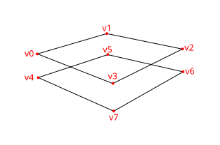
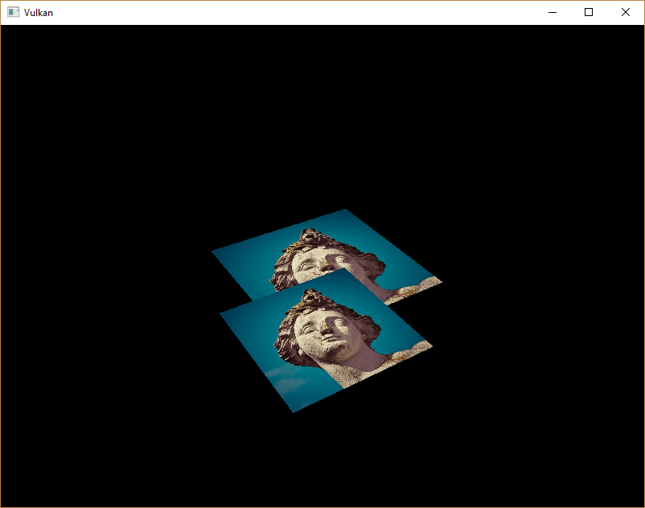
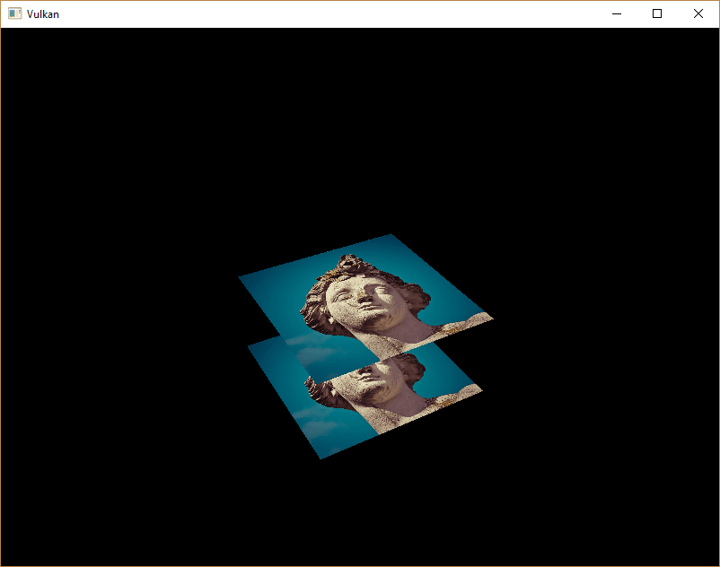

Depth Buffering
Introduction
The geometry we’ve worked with so far is projected into 3D, but it’s still completely flat. In this chapter, we’re going to add a Z coordinate to the position to prepare for 3D meshes. We’ll use this third coordinate to place a square over the current square to see a problem that arises when geometry is not sorted by depth.
3D geometry
Change the Vertex struct to use a 3D vector for the position, and update the format in the corresponding vk::VertexInputAttributeDescription:
struct Vertex {
glm::vec3 pos;
glm::vec3 color;
glm::vec2 texCoord;
...
static std::array<vk::VertexInputAttributeDescription, 3> getAttributeDescriptions() {
return {
vk::VertexInputAttributeDescription(0, 0, vk::Format::eR32G32B32Sfloat, offsetof(Vertex, pos)),
vk::VertexInputAttributeDescription(1, 0, vk::Format::eR32G32B32Sfloat, offsetof(Vertex, color)),
vk::VertexInputAttributeDescription(2, 0, vk::Format::eR32G32Sfloat, offsetof(Vertex, texCoord))
};
...
}
};Next, update the vertex shader to accept and transform 3D coordinates as input by changing the type for inPosition from float2 to float3:
struct VSInput {
float3 inPosition;
...
};
...
[shader("vertex")]
VSOutput vertMain(VSInput input) {
VSOutput output;
output.pos = mul(ubo.proj, mul(ubo.view, mul(ubo.model, float4(input.inPosition, 1.0))));
output.fragColor = input.inColor;
output.fragTexCoord = input.inTexCoord;
return output;
}Remember to recompile the shader afterwards!
Lastly, update the vertices container to include Z coordinates:
const std::vector<Vertex> vertices = {
{{-0.5f, -0.5f, 0.0f}, {1.0f, 0.0f, 0.0f}, {0.0f, 0.0f}},
{{0.5f, -0.5f, 0.0f}, {0.0f, 1.0f, 0.0f}, {1.0f, 0.0f}},
{{0.5f, 0.5f, 0.0f}, {0.0f, 0.0f, 1.0f}, {1.0f, 1.0f}},
{{-0.5f, 0.5f, 0.0f}, {1.0f, 1.0f, 1.0f}, {0.0f, 1.0f}}
};If you run your application now, then you should see exactly the same result as before. It’s time to add some extra geometry to make the scene more interesting, and to demonstrate the problem that we’re going to tackle in this chapter. Duplicate the vertices to define positions for a square right under the current one like this:

Use Z coordinates of -0.5f and add the appropriate indices for the extra square:
const std::vector<Vertex> vertices = {
{{-0.5f, -0.5f, 0.0f}, {1.0f, 0.0f, 0.0f}, {0.0f, 0.0f}},
{{0.5f, -0.5f, 0.0f}, {0.0f, 1.0f, 0.0f}, {1.0f, 0.0f}},
{{0.5f, 0.5f, 0.0f}, {0.0f, 0.0f, 1.0f}, {1.0f, 1.0f}},
{{-0.5f, 0.5f, 0.0f}, {1.0f, 1.0f, 1.0f}, {0.0f, 1.0f}},
{{-0.5f, -0.5f, -0.5f}, {1.0f, 0.0f, 0.0f}, {0.0f, 0.0f}},
{{0.5f, -0.5f, -0.5f}, {0.0f, 1.0f, 0.0f}, {1.0f, 0.0f}},
{{0.5f, 0.5f, -0.5f}, {0.0f, 0.0f, 1.0f}, {1.0f, 1.0f}},
{{-0.5f, 0.5f, -0.5f}, {1.0f, 1.0f, 1.0f}, {0.0f, 1.0f}}
};
const std::vector<uint16_t> indices = {
0, 1, 2, 2, 3, 0,
4, 5, 6, 6, 7, 4
};Run your program now, and you’ll see something resembling an Escher illustration:

The problem is that the fragments of the lower square are drawn over the fragments of the upper square, simply because it comes later in the index array. There are two ways to solve this:
-
Sort all the draw calls by depth from back to front
-
Use depth testing with a depth buffer
The first approach is commonly used for drawing transparent objects, because order-independent transparency is a difficult challenge to solve. However, the problem of ordering fragments by depth is much more commonly solved using a depth buffer. A depth buffer is an additional attachment that stores the depth for every position just like the color attachment stores the color of every position. Every time the rasterizer produces a fragment, the depth test will check if the new fragment is closer than the previous one. If it isn’t, then the new fragment is discarded. A fragment that passes the depth test writes its own depth to the depth buffer. It is possible to manipulate this value from the fragment shader, just like you can manipulate the color output.
#define GLM_FORCE_DEPTH_ZERO_TO_ONE
#include <glm/glm.hpp>
#include <glm/gtc/matrix_transform.hpp>The perspective projection matrix generated by GLM will use the OpenGL depth range of -1.0 to 1.0 by default.
We need to configure it to use the Vulkan range of 0.0 to 1.0 using the GLM_FORCE_DEPTH_ZERO_TO_ONE definition.
Depth image and view
A depth attachment is based on an image, just like the color attachment. The difference is that the swap chain will not automatically create depth images for us. We only need a single depth image, because only one draw operation is running at once. The depth image will again require the trifecta of resources: image, memory and image view.
vk::raii::Image depthImage = nullptr;
vk::raii::DeviceMemory depthImageMemory = nullptr;
vk::raii::ImageView depthImageView = nullptr;Create a new function createDepthResources to set up these resources:
void initVulkan() {
...
createCommandPool();
createDepthResources();
createTextureImage();
...
}
...
void createDepthResources() {
}Creating a depth image is fairly straightforward.
It should have the same resolution as the color attachment, defined by the swap chain extent, an image usage appropriate for a depth attachment, optimal tiling and device local memory.
The only question is: what is the right format for a depth image?
The format must contain a depth component, indicated by D?? in the vk::Format.
Unlike the texture image, we don’t necessarily need a specific format, because we won’t be directly accessing the texels from the program. It just needs to have a reasonable accuracy, at least 24 bits is common in real-world applications. There are several formats that fit this requirement:
-
vk::Format::eD32Sfloat: 32-bit float for depth -
vk::Format::eD32SfloatS8Uint: 32-bit signed float for depth and 8 bit stencil component -
vk::Format::eD24UnormS8Uint: 24-bit float for depth and 8 bit stencil component
The stencil component is used for stencil tests, which is an additional test that can be combined with depth testing. We’ll look at this in a future chapter.
We could simply go for the vk::Format::eD32Sfloat format, because support for it is extremely common (see the hardware database), but it’s nice to add some extra flexibility to our application where possible.
We’re going to write a function findSupportedFormat that takes a list of candidate formats in order from most desirable to least desirable, and checks which is the first one that is supported:
vk::Format findSupportedFormat(const std::vector<vk::Format>& candidates, vk::ImageTiling tiling, vk::FormatFeatureFlags features) {
}The support of a format depends on the tiling mode and usage, so we must also include these as parameters.
The support of a format can be queried using the physicalDevice.getFormatProperties function:
for (const auto format : candidates) {
vk::FormatProperties props = physicalDevice.getFormatProperties(format);
}The vk::FormatProperties struct contains three fields:
-
linearTilingFeatures: Use cases that are supported with linear tiling -
optimalTilingFeatures: Use cases that are supported with optimal tiling -
bufferFeatures: Use cases that are supported for buffers
Only the first two are relevant here, and the one we check depends on the tiling parameter of the function:
if (tiling == vk::ImageTiling::eLinear && (props.linearTilingFeatures & features) == features) {
return format;
}
if (tiling == vk::ImageTiling::eOptimal && (props.optimalTilingFeatures & features) == features) {
return format;
}If none of the candidate formats support the desired usage, then we can either return a special value or simply throw an exception:
vk::Format findSupportedFormat(const std::vector<vk::Format>& candidates, vk::ImageTiling tiling, vk::FormatFeatureFlags features) {
for (const auto format : candidates) {
vk::FormatProperties props = physicalDevice.getFormatProperties(format);
if (tiling == vk::ImageTiling::eLinear && (props.linearTilingFeatures & features) == features) {
return format;
}
if (tiling == vk::ImageTiling::eOptimal && (props.optimalTilingFeatures & features) == features) {
return format;
}
}
throw std::runtime_error("failed to find supported format!");
}We’ll use this function now to create a findDepthFormat helper function to select a format with a depth component that supports usage as depth attachment:
vk::Format findDepthFormat() {
return findSupportedFormat(
{vk::Format::eD32Sfloat, vk::Format::eD32SfloatS8Uint, vk::Format::eD24UnormS8Uint},
vk::ImageTiling::eOptimal,
vk::FormatFeatureFlagBits::eDepthStencilAttachment
);
}Make sure to use the vk::FormatFeatureFlagBits instead of vk::ImageUsageFlagBits in this case.
All of these candidate formats contain a depth component, but the latter two also contain a stencil component.
We won’t be using that yet, but we do need to take that into account when performing layout transitions on images with these formats.
Add a simple helper function that tells us if the chosen depth format contains a stencil component:
bool hasStencilComponent(vk::Format format) {
return format == vk::Format::eD32SfloatS8Uint || format == vk::Format::eD24UnormS8Uint;
}Call the function to find a depth format from createDepthResources:
vk::Format depthFormat = findDepthFormat();We now have all the required information to invoke our createImage and createImageView helper functions:
createImage(swapChainExtent.width, swapChainExtent.height, depthFormat, vk::ImageTiling::eOptimal, vk::ImageUsageFlagBits::eDepthStencilAttachment, vk::MemoryPropertyFlagBits::eDeviceLocal, depthImage, depthImageMemory);
depthImageView = createImageView(depthImage, depthFormat, vk::ImageAspectFlagBits::eDepth);However, the createImageView function currently assumes that the subresource is always the vk::ImageAspectFlagBits::eColor, so we will need to turn that field into a parameter:
vk::raii::ImageView createImageView(vk::raii::Image& image, vk::Format format, vk::ImageAspectFlags aspectFlags) {
...
vk::ImageViewCreateInfo viewInfo{
...
.subresourceRange = {aspectFlags, 0, 1, 0, 1}};
...
}Update all calls to this function to use the right aspect:
swapChainImageViews[i] = createImageView(swapChainImages[i], swapChainImageFormat, vk::ImageAspectFlagBits::eColor);
...
depthImageView = createImageView(depthImage, depthFormat, vk::ImageAspectFlagBits::eDepth);
...
textureImageView = createImageView(textureImage, vk::Format::eR8G8B8A8Srgb, vk::ImageAspectFlagBits::eColor);That’s it for creating the depth image. We don’t need to map it or copy another image to it, because we’re going to clear it at the start of our command buffer like the color attachment.
Command buffer
Clear values
Because we now have multiple attachments that will be cleared to vk::AttachmentLoadOp::eClear (color and depth), we also need to specify multiple clear values.
Go to recordCommandBuffer and create and add an additional vk::ClearValue variable called clearDepth:
vk::ClearValue clearColor = vk::ClearColorValue(0.0f, 0.0f, 0.0f, 1.0f);
vk::ClearValue clearDepth = vk::ClearDepthStencilValue(1.0f, 0);The range of depths in the depth buffer is 0.0 to 1.0 in Vulkan, where 1.0 lies at the far view plane and 0.0 at the near view plane.
The initial value at each point in the depth buffer should be the furthest possible depth, which is 1.0.
Dynamic rendering
Now that we have our depth image set up, we need to make use of it in recordCommandBuffer.
This will be part of dynamic rendering and is similar to setting up our color output image.
First specify a new rendering attachment for the depth image:
vk::RenderingAttachmentInfo depthAttachmentInfo = {
.imageView = depthImageView,
.imageLayout = vk::ImageLayout::eDepthAttachmentOptimal,
.loadOp = vk::AttachmentLoadOp::eClear,
.storeOp = vk::AttachmentStoreOp::eDontCare,
.clearValue = clearDepth};And add it to the dynamic rendering info structure:
vk::RenderingInfo renderingInfo = {
...
.pDepthAttachment = &depthAttachmentInfo};Explicitly transitioning the depth image
Just like the color attachment, the depth attachment needs to be in the correct layout for the intended use case. For this we need to issue an additional barriers to ensure that the depth image can be used as a depth attachment during rendering. The depth image is first accessed in the early fragment test pipeline stage and because we have a load operation that clears, we should specify the access mask for writes.
As we now deal with an additional image type (depth), first add a new argument to the transition_image_layout function for the image aspect:
void transition_image_layout(
...
vk::ImageAspectFlags image_aspect_flags)
{
vk::ImageMemoryBarrier2 barrier = {
...
.subresourceRange = {
.aspectMask = image_aspect_flags,
.baseMipLevel = 0,
.levelCount = 1,
.baseArrayLayer = 0,
.layerCount = 1}};
}Now add new image layout transition at the start of the command buffer in recordCommandBuffer:
commandBuffers[currentFrame].begin({});
// Transition for the color attachment
transition_image_layout(
...
vk::ImageAspectFlagBits::eColor);
// New transition for the depth image
transition_image_layout(
*depthImage,
vk::ImageLayout::eUndefined,
vk::ImageLayout::eDepthAttachmentOptimal,
vk::AccessFlagBits2::eDepthStencilAttachmentWrite,
vk::AccessFlagBits2::eDepthStencilAttachmentWrite,
vk::PipelineStageFlagBits2::eEarlyFragmentTests | vk::PipelineStageFlagBits2::eLateFragmentTests,
vk::PipelineStageFlagBits2::eEarlyFragmentTests | vk::PipelineStageFlagBits2::eLateFragmentTests,
vk::ImageAspectFlagBits::eDepth);Unlike as with the color image we don’t need multiple barriers here. As we don’t care for the contents of the depth attachment once the frame is finished, we can always translate from vk::ImageLayout::eUndefined. What’s special about this layout, is the fact that you can always use it as a source without having to care what happens before.
Also make sure you adjust all other calls to the transition_image_layout function call to pass the correct image aspect:
// Before starting rendering, transition the swapchain image to COLOR_ATTACHMENT_OPTIMAL
transition_image_layout(
...
// Also need to specify this for color images
vk::ImageAspectFlagBits::eColor);Depth and stencil state
The depth attachment is ready to be used now, but depth testing still needs to be enabled in the graphics pipeline.
It is configured through the PipelineDepthStencilStateCreateInfo struct:
vk::PipelineDepthStencilStateCreateInfo depthStencil{
.depthTestEnable = vk::True,
.depthWriteEnable = vk::True,
.depthCompareOp = vk::CompareOp::eLess,
.depthBoundsTestEnable = vk::False,
.stencilTestEnable = vk::False};The depthTestEnable field specifies if the depth of new fragments should be compared to the depth buffer to see if they should be discarded.
The depthWriteEnable field specifies if the new depth of fragments that pass the depth test should actually be written to the depth buffer.
The depthCompareOp field specifies the comparison that is performed to keep or discard fragments.
We’re sticking to the convention of lower depth = closer, so the depth of new fragments should be less.
The depthBoundsTestEnable, minDepthBounds and maxDepthBounds fields are used for the optional depth bound test.
Basically, this allows you to only keep fragments that fall within the specified depth range.
We won’t be using this functionality.
The last three fields configure stencil buffer operations, which we also won’t be using in this tutorial. If you want to use these operations, then you will have to make sure that the format of the depth/stencil image contains a stencil component.
A depth stencil state must always be specified if the dynamic rendering setup contains a depth stencil attachment:
Update the pipelineCreateInfoChain structure chain to reference the depth stencil state we just filled in and also add a reference to the depth format we’re using:
vk::StructureChain<vk::GraphicsPipelineCreateInfo, vk::PipelineRenderingCreateInfo> pipelineCreateInfoChain = {
{.stageCount = 2,
...
.pDepthStencilState = &depthStencil,
...
{.colorAttachmentCount = 1, .pColorAttachmentFormats = &swapChainSurfaceFormat.format, .depthAttachmentFormat = depthFormat}};If you run your program now, then you should see that the fragments of the geometry are now correctly ordered:

Handling window resize
The resolution of the depth buffer should change when the window is resized to match the new color attachment resolution.
Extend the recreateSwapChain function to recreate the depth resources in that case:
void recreateSwapChain() {
int width = 0, height = 0;
while (width == 0 || height == 0) {
glfwGetFramebufferSize(window, &width, &height);
glfwWaitEvents();
}
device.waitIdle(device);
cleanupSwapChain();
createSwapChain();
createImageViews();
createDepthResources();
}Congratulations, your application is now finally ready to render arbitrary 3D geometry and have it look right. We’re going to try this out in the next chapter by drawing a textured model!